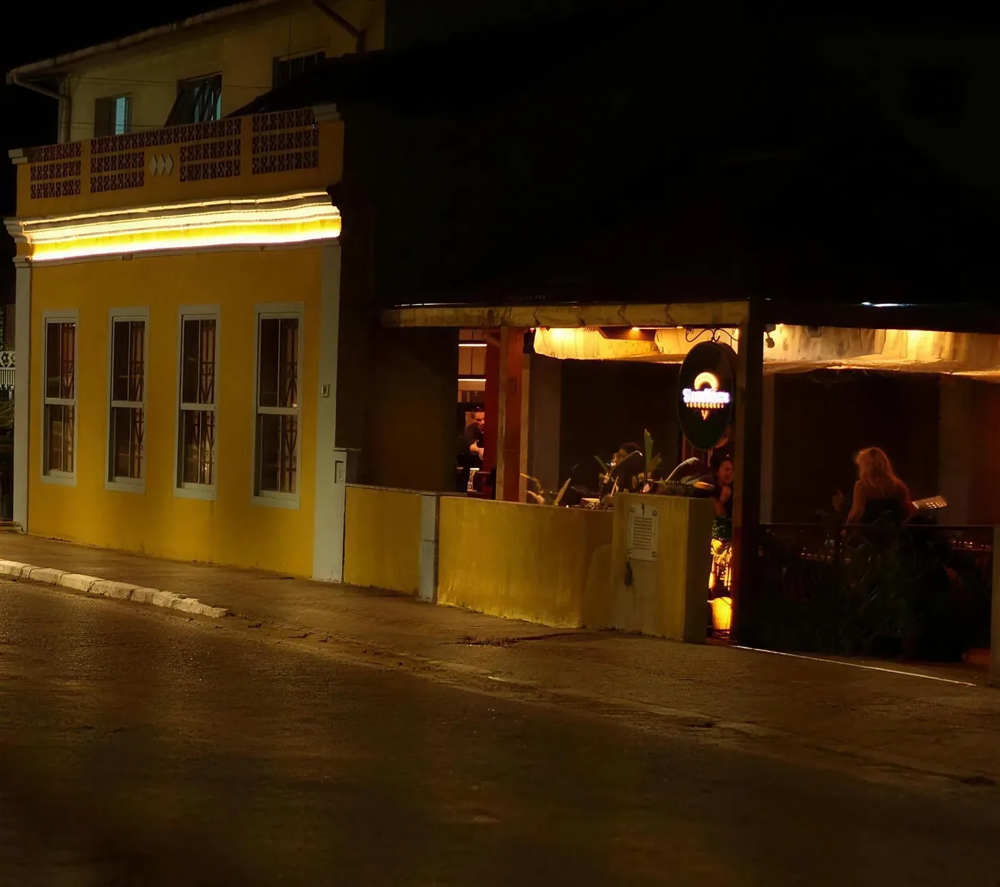
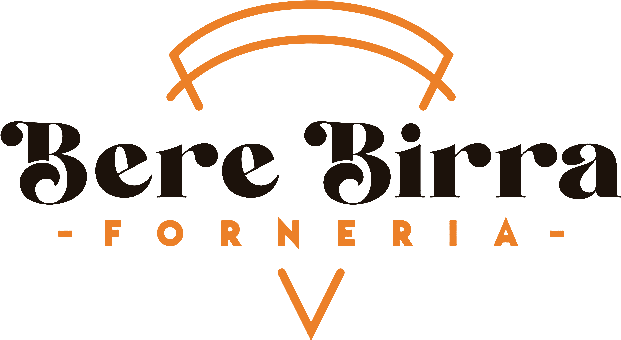
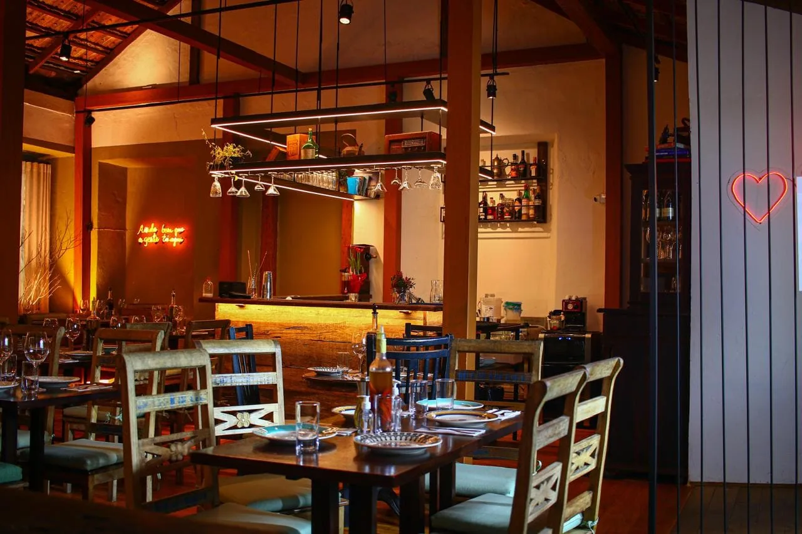
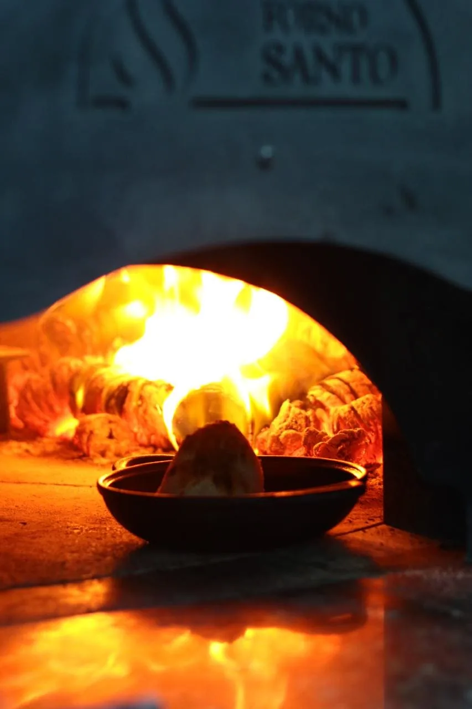
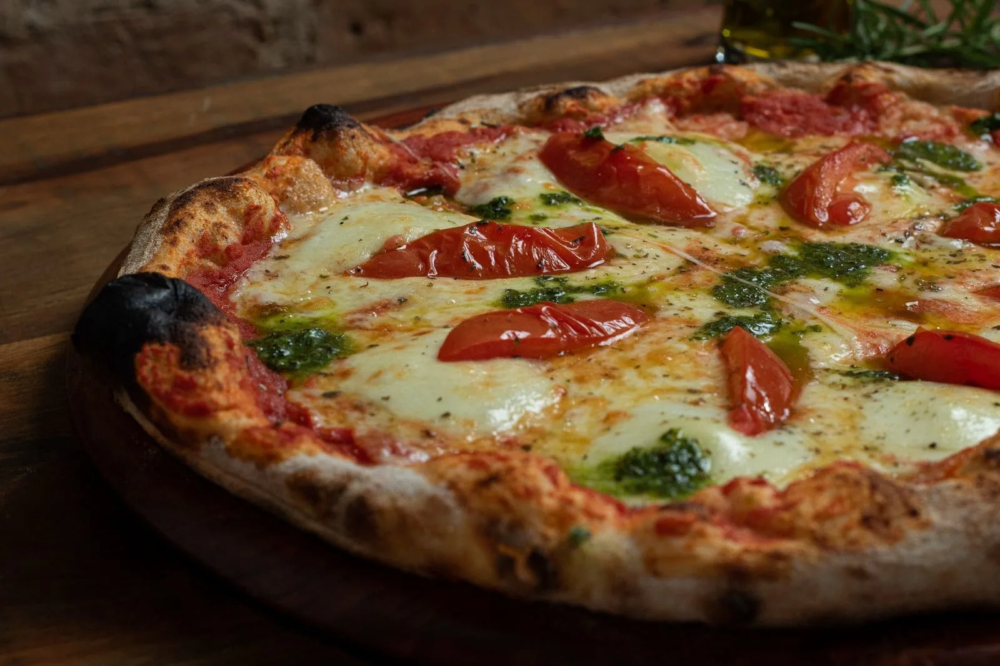
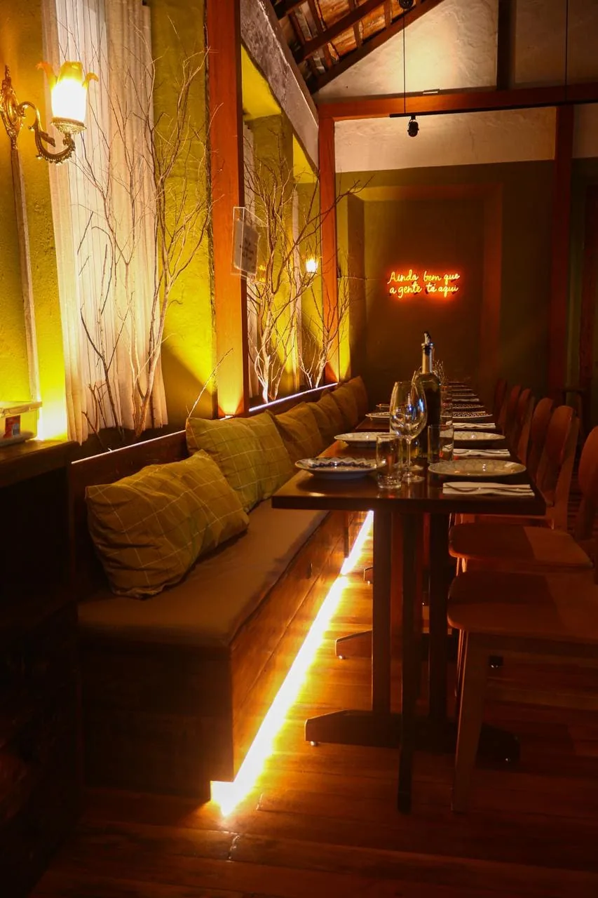
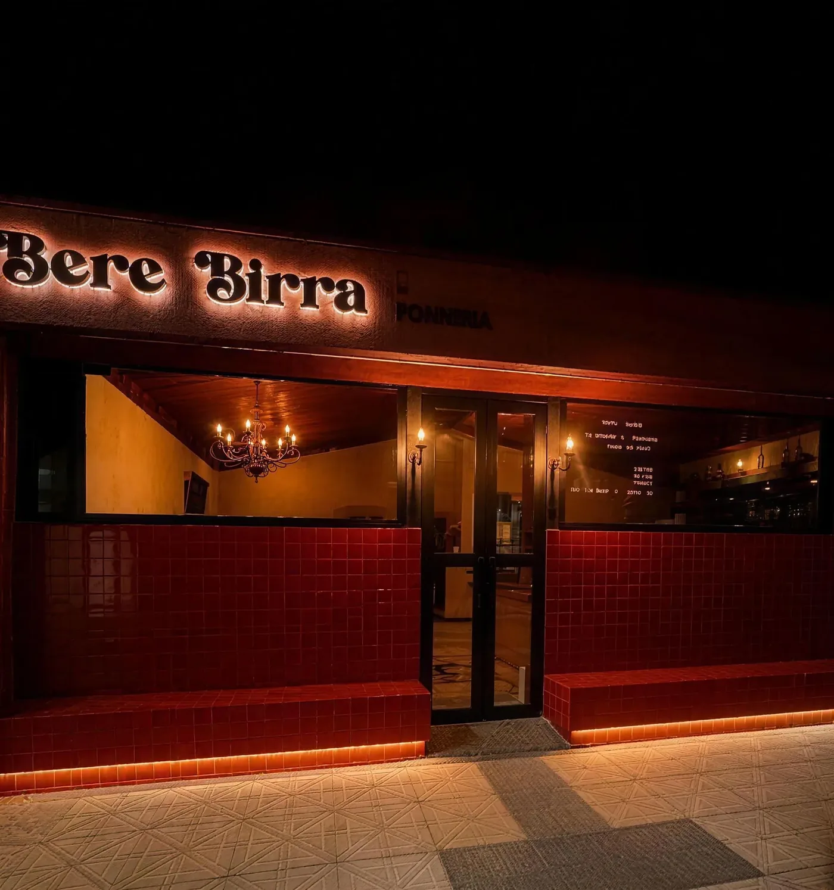
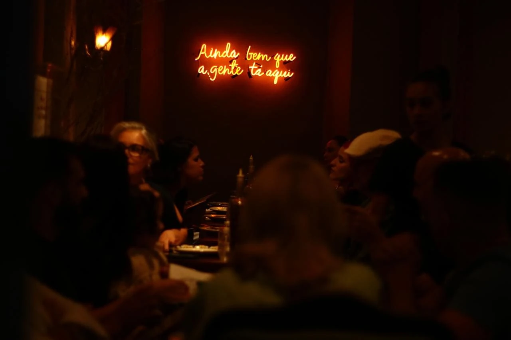

Rio Vermelho
o casarão
Rod. João Gualberto Soares, 6812
Rio Vermelho, Florianópolis


Reservar pelo WhatsAppReservaro neon do casarão, no Rio Vermelho
Forneria em Florianópolis. Pizza de longa fermentação, no forno a lenha, em duas casas.
Rod. João Gualberto Soares, 6812 · Rio Vermelho · Rota · Waze
A reserva começa numa conversa pelo WhatsApp da casa. Nada fica confirmado pelo site.

A massa leva farinha orgânica e descansa no mínimo 24 horas antes de ir ao forno a lenha. A casa nasceu em 2020, numa casinha açoriana no Rio Vermelho; hoje, o salão é um casarão.



Na carta da casa, a sobremesa vem antes da pizza. Ué!?
na ordem da casa
Carta da unidade Santa Mônica, abril de 2026. Sem preços. Carta completa no site da casa
Reservar no Rio Vermelho
o casarão
Rod. João Gualberto Soares, 6812
Rio Vermelho, Florianópolis

a casa nova
R. Esaú Pereira da Silva, 160
Santa Mônica, Florianópolis
Os botões abrem uma conversa no WhatsApp da casa. Reserva e disponibilidade são combinadas lá; nada fica confirmado pelo site.

o neon do casarão, no Rio Vermelho
Escolha a casa e chame no WhatsApp. A reserva é combinada na conversa; nada fica confirmado pelo site.